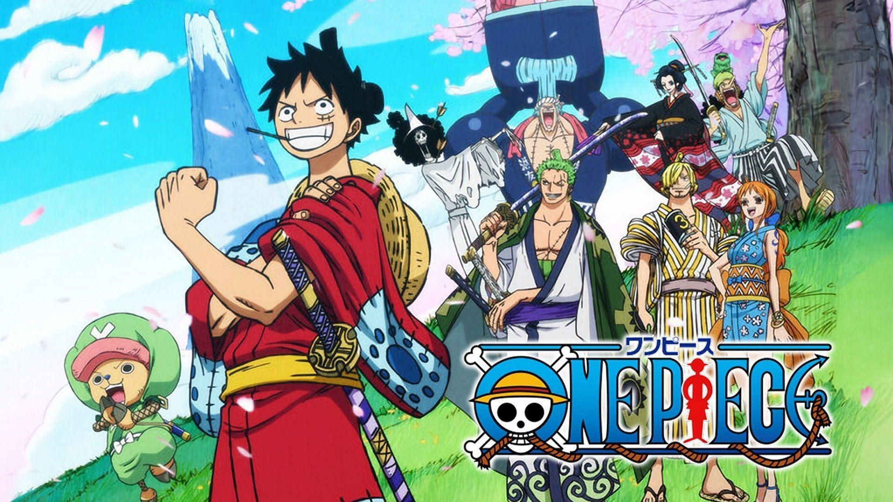
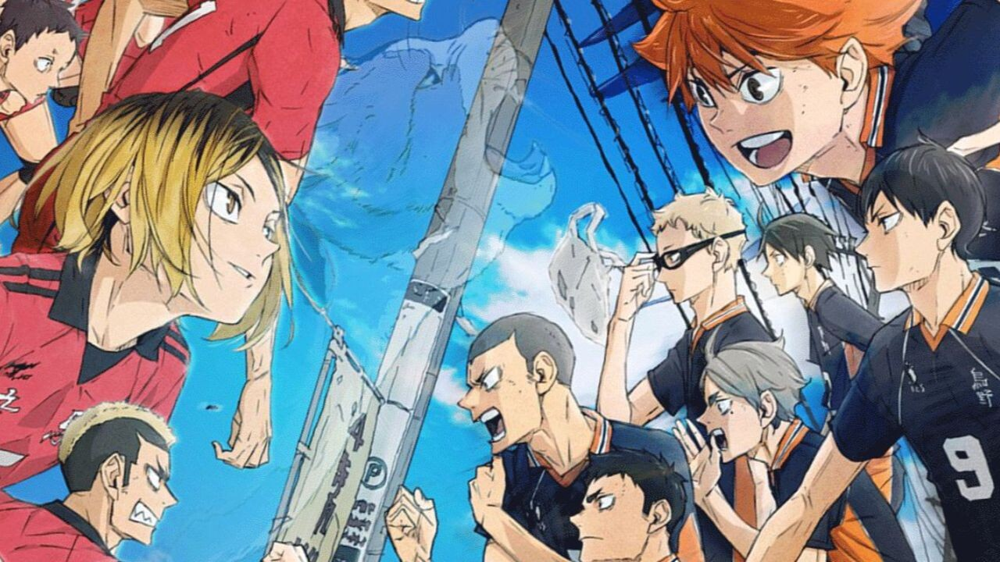
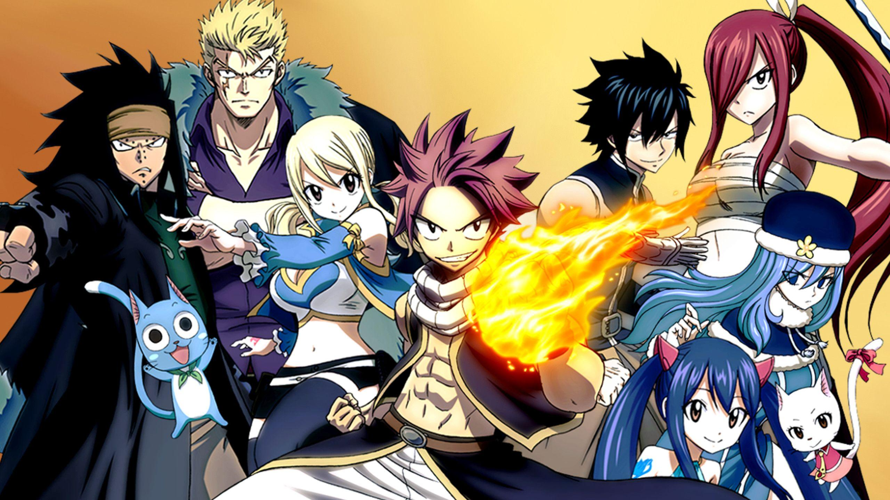
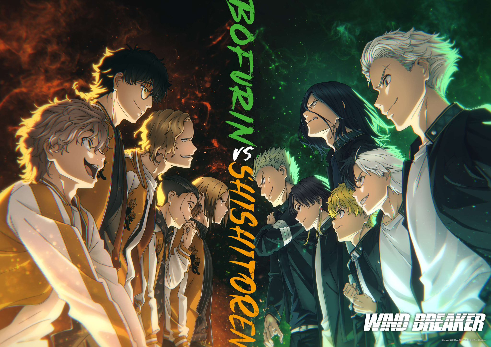
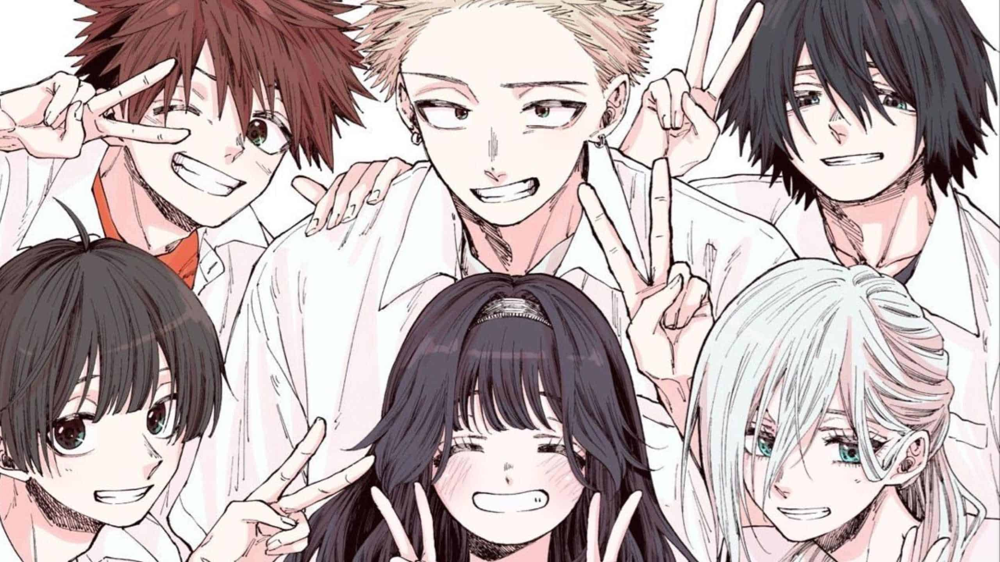
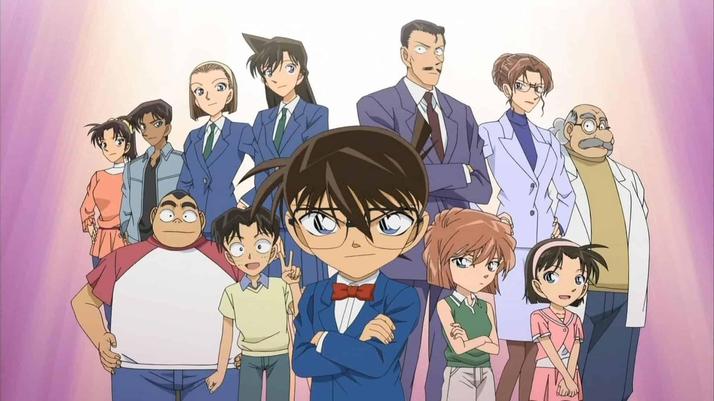
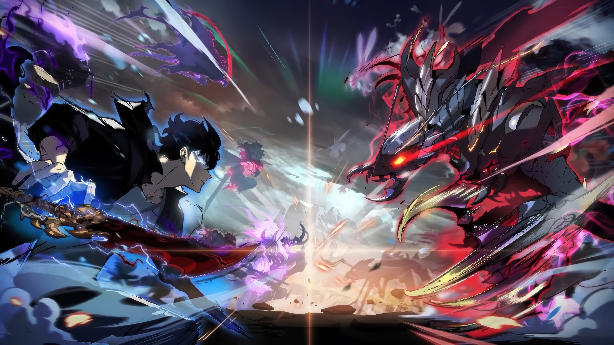
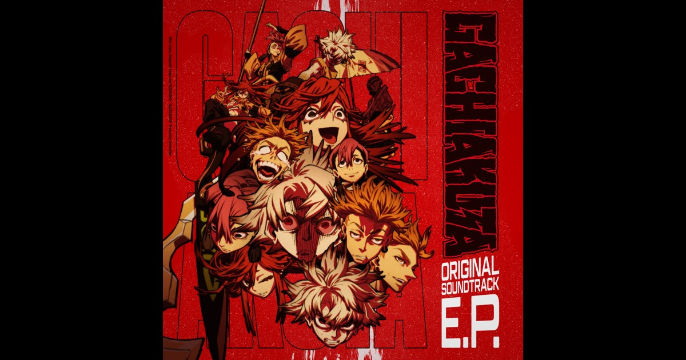

My Favorite Anime
Anime is one of my favorite forms of entertainment. I enjoy watching different genres including action, sports, and adventure. Below are some of my favorite anime series that I have watched and enjoyed.
-
One Piece

One Piece follows Monkey D. Luffy and his pirate crew as they travel across the ocean searching for the legendary treasure known as the One Piece. I enjoy this anime because of its adventure, humor, and the strong friendship between the characters.
-
Haikyuu

Haikyuu is a sports anime about a high school volleyball team working hard to become the best in Japan. I like this anime because it shows teamwork, determination, and exciting volleyball matches.
-
Fairy Tail

Fairy Tail follows a group of powerful wizards from the Fairy Tail guild as they complete missions and protect their friends. The story focuses on friendship, loyalty, and magical battles.
-
Wind Breaker

Wind Breaker tells the story of students at a high school known for protecting their town from troublemakers. I enjoy this anime because of its action scenes and strong sense of community among the characters.
-
The Fragrant Flower Blooms with Dignity

This story focuses on the relationship between two students from very different schools. It explores friendship, romance, and personal growth.
-
Case Closed

Case Closed follows a teenage detective name Kudo Shinichi who is turned into a child after being poisoned by a criminal organization. He continues solving mysteries while searching for a way to return to his original body.
-
Jujutsu no Kaisen

Jujutsu Kaisen follows Yuji Itadori as he enters the world of jujutsu sorcerers who fight powerful curses. I like this anime because of its intense battles and interesting supernatural story.
-
Solo Leveling

Solo Leveling tells the story of Sung Jinwoo, a weak hunter who suddenly gains the ability to level up his powers like a game character. The anime is exciting because it shows his growth from the weakest to one of the strongest hunters.
-
Gachiakuta

Gachiakuta is about a boy who is thrown into a dangerous world filled with trash monsters and mysterious powers. The story focuses on survival, revenge, and uncovering the truth about his world.
-
Frieren

Frieren tells the story of an elf mage who continues her journey after defeating the demon king with her former party. The anime focuses on memory, friendship, and the passage of time.
These are some of the anime series that I enjoy watching the most. Each one has a unique story, interesting characters, and exciting moments that make them memorable. I enjoy exploring different genres of anime and discovering new stories and worlds through animation.